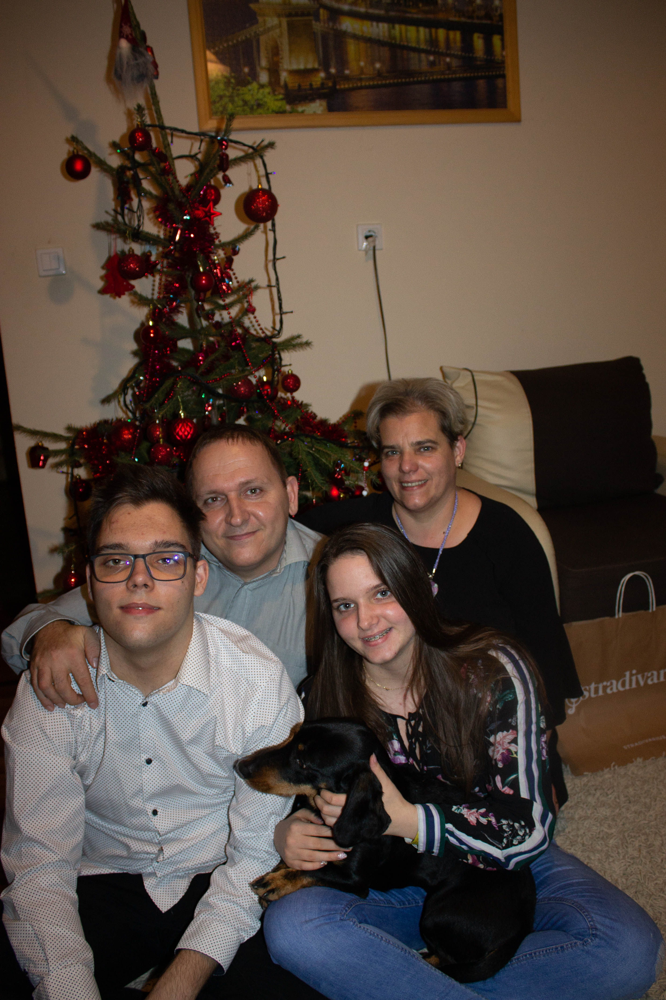
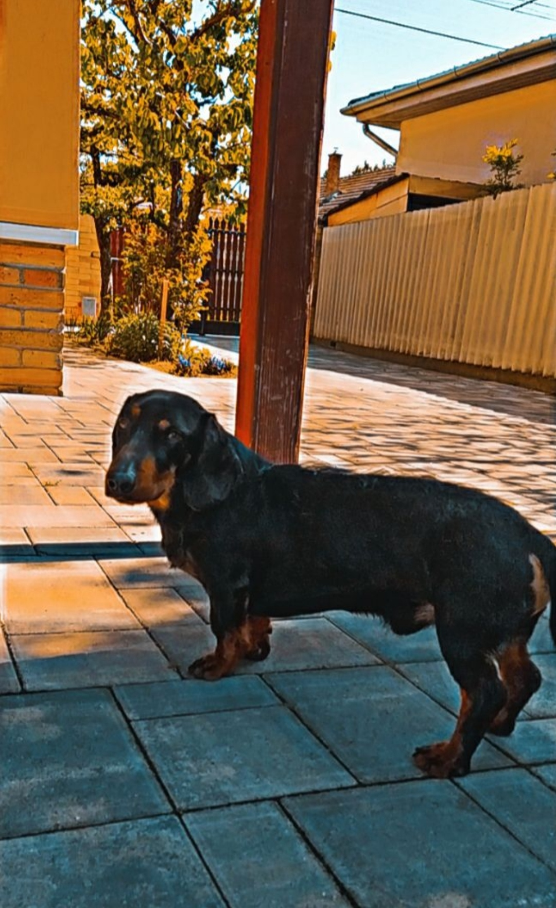
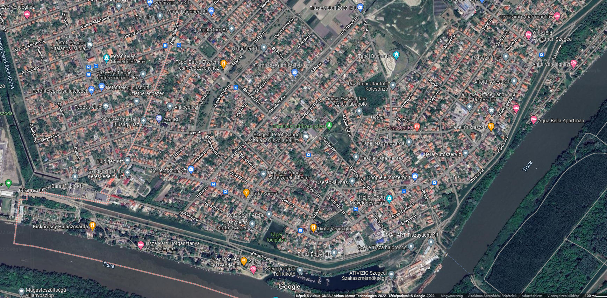

Előző Iskolám a Szegedi Petőfi Sándor Általános Iskola Bálint Sándor Tagiskola

Nagyon jó viszonyt ápolok a családtagjaimmal, szeretek velük lenni.
Van egy kutyám, egy tacskó, Filipnek hívják, nagyon szerteti az embereket, viszont ez a macskámról nem mondható el.
Szegeden születtem, itt is élek, azon belül Tápén, nagyon jó környék mindenkinek csak ajánlani tudom.
 Hobbijaim